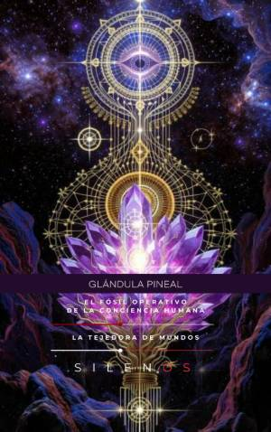

Illuminati
Glándula Pineal: El Fósil Operativo de la Conciencia Humana
Sinopsis
Glándula Pineal: El Fósil Operativo de la Conciencia Humana ¿Es la glándula pineal simplemente un vestigio biológico o el remanente de una facultad sensorial perdida? En esta obra, se explora el enigma de la epífisis desde una perspectiva multidisciplinar que conecta la anatomía científica con las tradiciones esotéricas más profundas. A través de un recorrido fascinante, el lector descubrirá por qué este pequeño órgano ha sido bautizado como el "tercer ojo" y qué papel juega en la evolución de la conciencia actual. Lo que descubrirás en este libro: Geografías Míticas y Evolución: Un viaje desde la herencia de civilizaciones antiguas hasta la anatomía comparada, analizando la transición del ojo ciclópeo al órgano neuroendocrino moderno. Farmacología Sagrada: Un estudio sobre la biosíntesis endógena, el papel del DMT y la denominada "molécula del espíritu" en la frontera de la experiencia mística y la neurociencia. Historia de la Anatomía Sagrada: El legado de Herófilo, las teorías de René Descartes sobre la sede del alma y el simbolismo oculto en tradiciones masónicas y egipcias. Tradición Esotérica Moderna: El renacimiento ocultista del siglo XIX, la activación del Ajna y las claves de la anatomía sutil propuestas por figuras como Blavatsky y la Golden Dawn. Ciencia y Soberanía Mental: Una mirada crítica a los experimentos de control mental del siglo XX, el impacto de la fluoración en la calcificación pineal y estrategias prácticas para la descalcificación y la mejora de los ritmos circadianos. Hacia un Despertar Ético Este libro no solo ofrece información histórica y científica; es una invitación a recuperar la soberanía mental. A través de un manifiesto para el despertar ético, se analizan las condiciones necesarias para reactivar facultades latentes y proteger nuestra psique en un mundo de manipulación tecnológica. Glándula Pineal: El Fósil Operativo de la Conciencia Humana es una guía esencial para buscadores, estudiantes de esoterismo y cualquier persona interesada en comprender los umbrales donde la biología y el espíritu convergen.